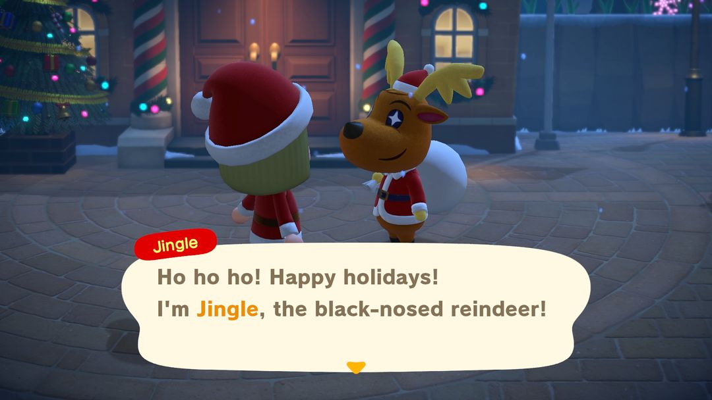
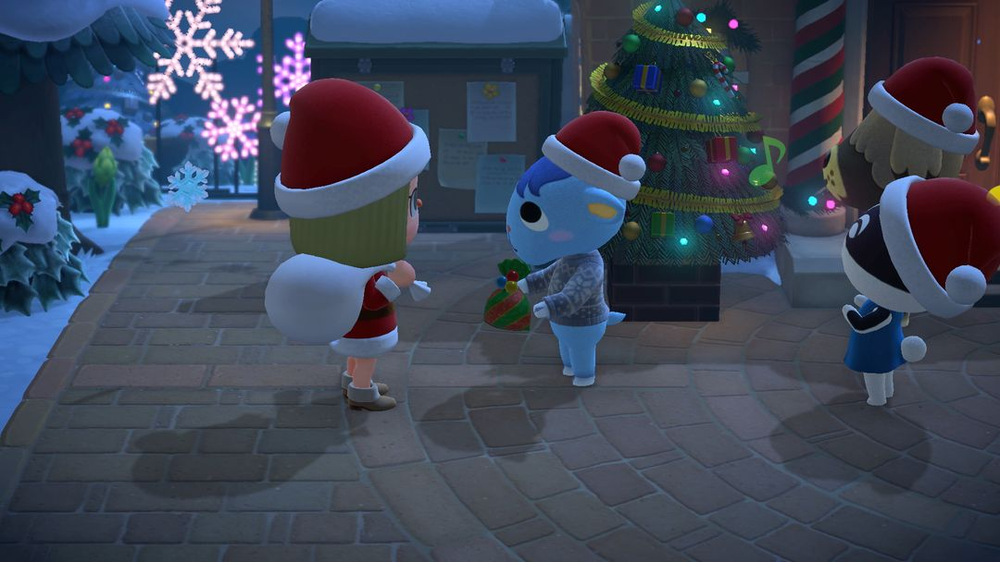
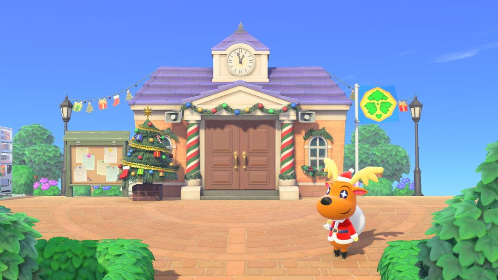

Toy Day: help Jingle deliver presents
How December 24 plays out, plus the ornaments and DIY recipes to collect beforehand
Toy Day is the game's Christmas Eve celebration. It's on December 24 every year, the same day in both hemispheres, running from 5 AM until 5 AM the next morning. The star is Jingle, the black-nosed reindeer and Santa's helper. He can't manage on his own, so he asks you to help deliver presents to every villager, and gives you the Toy Day sleigh as thanks when you're done.
Before you can start on the day, you need to hand over 3 sheets of festive wrapping paper. Each one takes red, blue, and gold ornaments, which you can only collect by shaking cedar trees from December 15 on. So the real prep happens between the 15th and the 23rd, and on the 24th all you have to do is deliver presents.

Jingle (Image: Nintendo promo, via Nookipedia)
01Key dates in December
Here's every Toy Day–related date in December. Starting December 1, the shops switch to holiday stock, and once the cedar trees get decorated on the 15th, you can start collecting ornaments.
| Date | What happens |
| From 12/1 | Nook's Cranny sells holiday toys and Able Sisters sells holiday outfits, through the 25th |
| 12/15 | Cedar trees get decorated and drop ornaments when shaken; Isabelle mails you a Toy Day DIY recipe |
| 12/24 | Toy Day, 5 AM to 5 AM the next day |
| 12/25 – 1/1 | Interact with your hung Toy Day stockings to get Jingle's photo |
| 1/6 (next year) | Ornament season ends |
The dates are exactly the same in the Southern Hemisphere, but it's summer there: in the north it snows all day, while in the south it's bright and sunny — even the background music is different.
02Delivering presents on the 24th
The day follows a set order — just work through it:
1. Find Jingle in front of Resident Services. He'll teach you the festive wrapping paper DIY recipe and ask you to make 3 sheets for him.
2. Each sheet takes 1 red, 1 blue, and 1 gold ornament, so 3 sheets means 3 of each color. Once you hand them over, he'll give you the Toy Day stockings and then the magic bag.
3. Take out the magic bag and wear it, then walk up to villagers and talk to them to hand over their presents. Who gets which present is decided automatically, so no need to guess what each villager likes. Villagers you're close to will also give you a toy in return.
4. Halfway through, go back to Jingle and he'll teach you the gift pile DIY recipe. Once you've delivered everything, talk to him again to get the Toy Day sleigh, and he'll take back the magic bag.

Carrying the magic bag door to door (Image: Nintendo promo, via Nookipedia)
Villagers wander around during the day, so by the end there are always a few you can't track down.
TipWhen there are only 3 presents left, check the magic bag. It lists the villagers who haven't gotten theirs yet, so you can look for them by name instead of running all over the island.
Swapping gifts afterward
Once all the presents are delivered, you can do another round of swaps with your villagers: wrap any item in wrapping paper and give it to a villager, and they'll give you a holiday toy in return, in a different color from the ones sold in the shop. If you're collecting color variations, swap with as many villagers as you can. Each villager only swaps once that day.
If you buy and wear the full set from Able Sisters — Santa hat, Santa beard, Santa coat, and Santa pants — villagers will say you look like Santa.
03Collecting ornaments and Toy Day DIY
From December 15 to January 6, the cedar trees on your island are covered in lights. Shake them and red, blue, and gold ornaments fall out. Collect at least 3 of each color before the 24th, or you won't be able to make the wrapping paper and won't get to deliver presents.
Toy Day furniture DIY recipes come from popping balloons or from villagers you catch crafting at home. Isabelle also mails you one on the 15th.
Cedar trees get decorated starting December 15 (Image: Nookipedia)
Here's how many ornaments some Toy Day furniture needs. Check the table before crafting so you don't use up the ones you need for wrapping paper.
| DIY recipe | Ornaments (red / blue / gold) |
| festive wrapping paper | 1 / 1 / 1 |
| big festive tree | 6 / 6 / 4, plus wood and clay |
| festive tree | 3 / 3 / 2, plus wood |
| festive rug, Jingle wall | 5 / 5 / 5 each; the Jingle wall also needs clay |
| giant ornament | 10 / 0 / 0 |
| ornament wreath | 0 / 6 / 2 |
| illuminated reindeer | 0 / 0 / 6, plus iron nuggets |
The gift pile doesn't use ornaments: it takes 3 red wrapping paper, 1 wooden-block toy, and 1 cardboard box.
04Toys at Nook's Cranny in December
From December 1 to 25, Nook's Cranny stocks holiday toys at these prices:
| Toy | Bells |
| kids' tent | 4,500 |
| dollhouse | 4,000 |
| mini circuit | 3,800 |
| RC helicopter | 3,600 |
| tin robot | 3,500 |
| dinosaur toy, puppy plushie | 2,400 each |
| pop-up book, set of stockings | 2,000 each |
05A few tips
Gold ornaments run out fastest. The trees and lights all need gold, so set aside 3 for wrapping paper first and only use extras for furniture.
Hold your net before shaking trees. Cedar trees can drop wasp nests too, and the wasps will chase and sting you. With a net in hand, you can catch them in time.
Finish before 5 AM on the 25th. After 5 AM, Jingle and the magic bag are gone, and if you haven't delivered every present, you won't get the sleigh.

Toy Day is sunny in the Southern Hemisphere (Image: Nookipedia)
06Version changes
Since Ver. 2.0, if a villager is crafting a Toy Day DIY recipe you already know, they won't teach it to you again and give you 3 ornaments in random colors instead — the same way Halloween gives you pumpkins.
Since Ver. 2.0, seasonal events arrive automatically every year with no update needed. The Ver. 3.0 patch notes don't mention any Toy Day changes.
Nook Circle · Search "Nook Circle" on the App Store